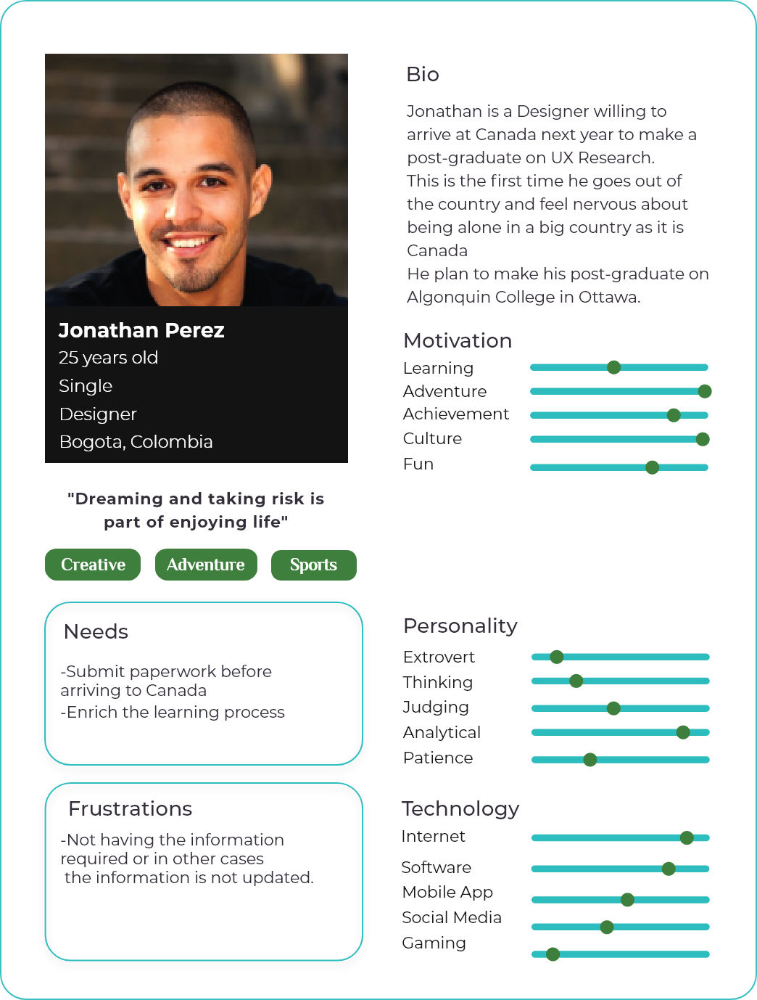
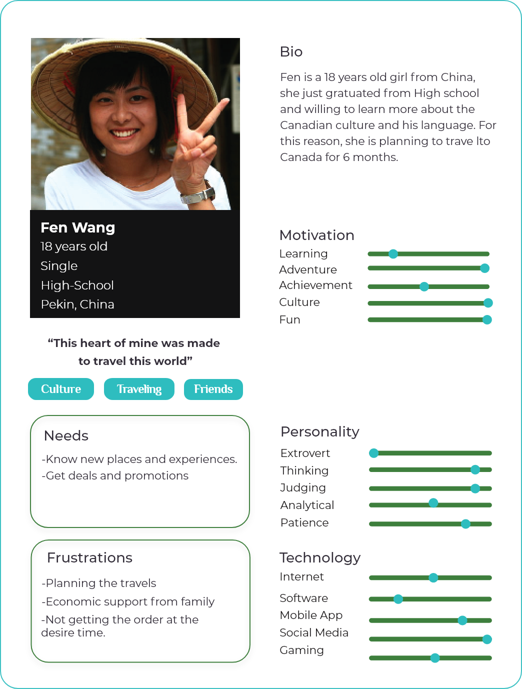
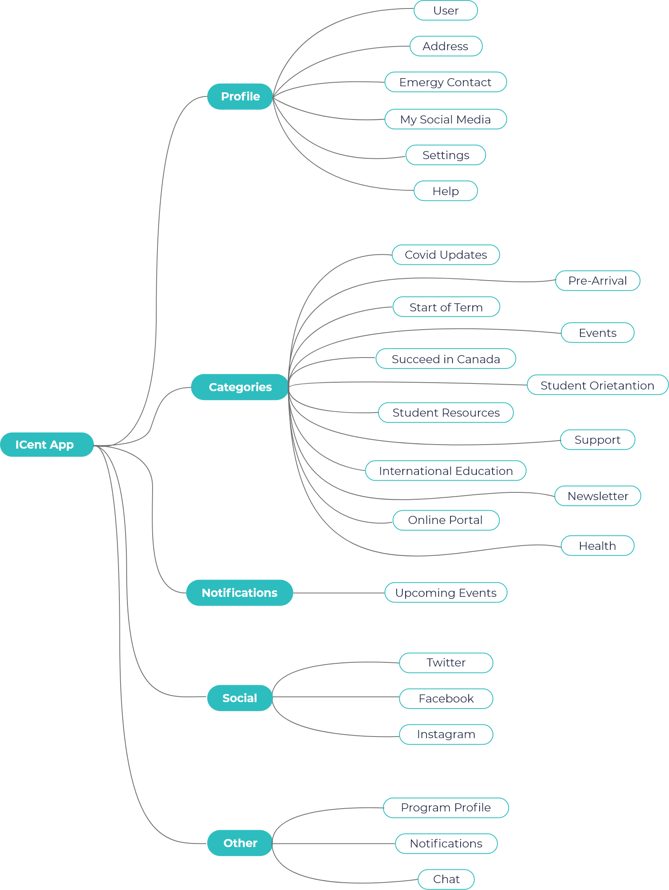
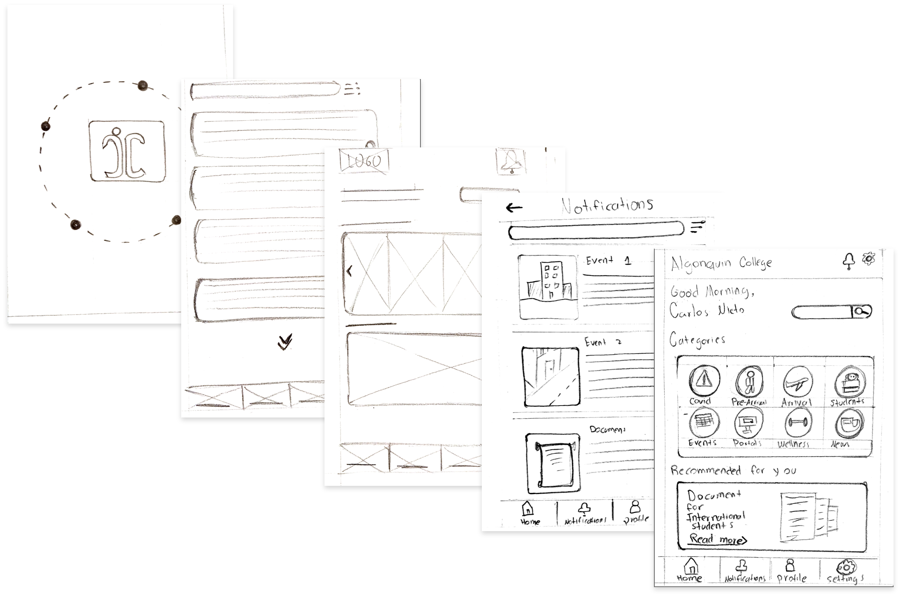
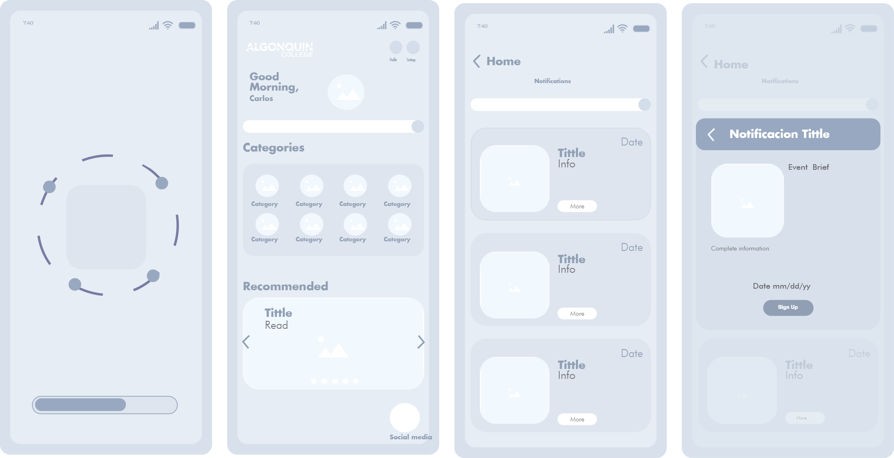
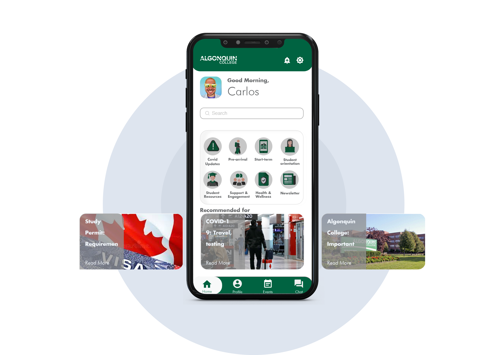

Icent- App Redesign
#User Research #UX/UI #ReDesign
Challenge: : Icent is a multilingual hub for information delivery, communication management, user engagement, and supports services. It is an app for international students in need of guidance on the process of coming to a new country and settling down. Due to the number of information available to the students the process of finding information is overwhelming.
Objective
Re-design and implement a responsive website that fits with the brand identity and business goals
Goals
Business
To be one of the main software to facilitate the process of arrival, adaptation, and life of international students in the country of destination.
User
Understand in an easy and clear way the processes and requirements that an international student must do before traveling to another country.
Being able to make a transition to another country with greater ease, allowing adaptation to culture, laws, socialization, among others.
Process
This application was chosen due to a bad personal experience, for this reason, validation was carried out with other users to validate and raise the problem. After interviewing other Users, it was found that the problem was in the organization of the categories. The profile of the users was further studied and two user personas with relevant knowledge of the research were established. We proceeded to analyze the structure and architecture of the categories of the app. In the ideation phase, base elements of the original app were taken and improved visually and functionally. Then, in the design phase, they were taken to development and implementation through high-fidelity prototypes..
Problem Statement
Categories Organization
Being an international student is not easy, arriving in another country far from your family, and friends and leaving everything behind entails an enormous challenge. For this reason, Algonquin College offers a guide service for international students through the App called ICent. The guided service provides a wide variety of news, resources, guides, and tools that greatly help international students. The problem is that by having so much information, finding something becomes a challenge, which frustrates the user and discourages the.
User Research
User Personas
 Ideation
Site Map & User Flows
In the analysis it was determined that the structure of the app and the navigation of the application could be improved by reducing the number of categories and restructuring the information on the home page.
Sketches
Wireframes
High Fidelity Prototype
What I learned
During this research process, I learned a lot from users; For instance, what I have in mind is not necessarily something the user needs. This is one of the reasons why we must empathize with our users. I learned that doing a UI/UX case study is not easy. The process of understanding the user needs, the process of understanding user problems, addressing them, finding insights, and generating the design is complex and requires order. From a design point of view, addressing a problem from an existing application makes the design system a bit easier, since there is a brand manual that must be followed. Finally, in this project, there are still stages that could not be executed due to time and external causes, for example, usability tests with real users.